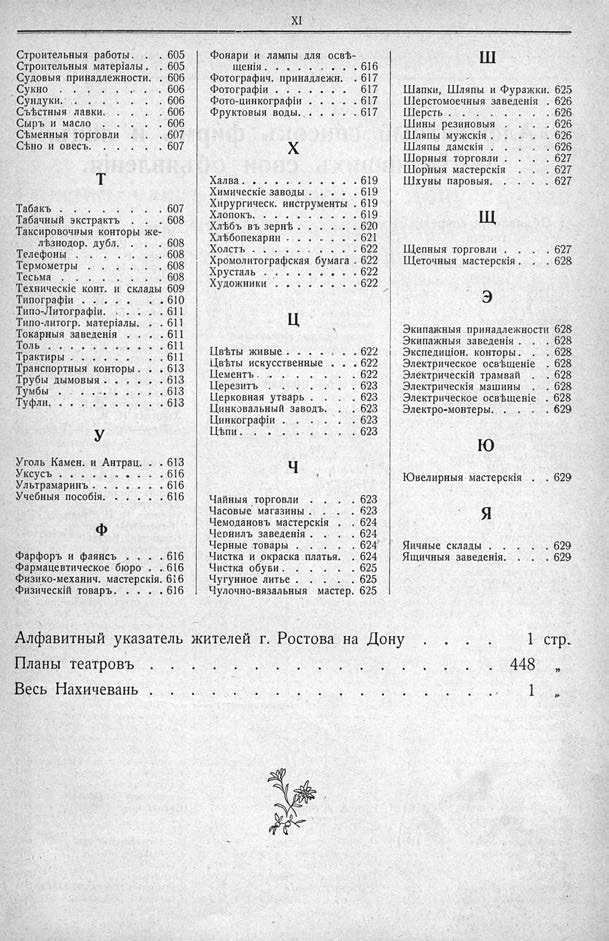

Лист источника 41
Скан

Распознанный текст
XI
Строительныя работы. . . 605
Строительныя матеріалы . . 605
Судовыя принадлежности. . 606
Сукно . . . . . . . . . . 606
Сундуки. . . . . . . . . . 606
Съѣстныя лавки. . . . . . 606
Сыръ и масло . . . . . . 606
Сѣменныя торговли . . . . 607
Сѣно и овесъ. . . . . . . 607
Т
Табакъ . . . . . . . . . 607
Табачный экстрактъ . . . 608
Таксировочныя конторы же-
лѣзнодор. дубл. . . . 608
Телефоны . . . . . . . . 608
Термометры . . . . . . . 608
Тесьма . . . . . . . . . 608
Техническіе конт. и склады 609
Типографіи . . . . . . . . 610
Типо-Литографіи. . . . . . 611
Типо-литогр. матеріалы. . . 611
Токарныя заведенія . . . 611
Толь . . . . . . . . . . 611
Трактиры . . . . . . . . 611
Транспортныя конторы . . . 613
Трубы дымовыя . . . . . . 613
Тумбы . . . . . . . . . 613
Туфли. . . . . . . . . . 613
У
Уголь Камен. и Антрац. . . 613
Уксусъ . . . . . . . . . 616
Ультрамаринъ . . . . . . 616
Учебныя пособія. . . . . . 616
Ф
Фарфоръ и фаянсъ . . . . 616
Фармацевтическое бюро . . 616
Физико-механич. мастерскія. 616
Физическій товаръ. . . . . 616
Фонари и лампы для освѣ-
щенія . . . . . . . 616
Фотографич. принадлежн. . 617
Фотографіи . . . . . . . 617
Фото-цинкографіи . . . . 617
Фруктовыя воды. . . . . . 617
Х
Халва . . . . . . . . . . 619
Химическіе заводы . . . . 619
Хирургическ. инструменты . 619
Хлопокъ. . . . . . . . . 619
Хлѣбъ въ зернѣ . . . . . 620
Хлѣбопекарни . . . . . . 621
Холстъ . . . . . . . . . 622
Хромолитографская бумага . 622
Хрусталь . . . . . . . . 622
Художники . . . . . . . 622
Ц
Цвѣты живые . . . . . . 622
Цвѣты искусственные . . . 622
Цементъ . . . . . . . . 622
Церезитъ . . . . . . . . 623
Церковная утварь . . . . 623
Цинковальный заводъ. . . 623
Цинкографіи . . . . . . . 623
Цѣпи . . . . . . . . . . 623
Ч
Чайныя торговли . . . . . 623
Часовые магазины . . . . 623
Чемодановъ мастерскія . . 624
Чернилъ заведенія . . . . 624
Черные товары . . . . . 624
Чистка и окраска платья. . 624
Чистка обуви . . . . . . 625
Чугунное литье . . . . . 625
Чулочно-вязальныя мастер. 625
Ш
Шапки, Шляпы и Фуражки. 625
Шерстомоечныя заведенія . 626
Шерсть . . . . . . . . . 626
Шины резиновыя . . . . . 626
Шляпы мужскія . . . . . 626
Шляпы дамскія . . . . . 626
Шорныя торговли . . . . 627
Шорныя мастерскія . . . 627
Шхуны паровыя. . . . . . 627
Щ
Щепныя торговли . . . . . 627
Щеточныя мастерскія . . . 628
Э
Экипажныя принадлежности 628
Экипажныя заведенія . . . 628
Экспедиціон. конторы . . . 628
Электрическое освѣщеніе . 628
Электрическій трамвай . . 628
Электрическія машины . . 628
Электрическое освѣщеніе . 628
Электро-монтеры. . . . . 629
Ю
Ювелирныя мастерскія . . 629
Я
Яичные склады . . . . . 629
Ящичныя заведенія. . . . 629
Алфавитный указатель жителей г. Ростова на Дону . . . . 1 стр.
Планы театровъ . . . . . . . . . . . . . . . . . . . . 448 „
Весь Нахичевань . . . . . . . . . . . . . . . . . . . 1 „